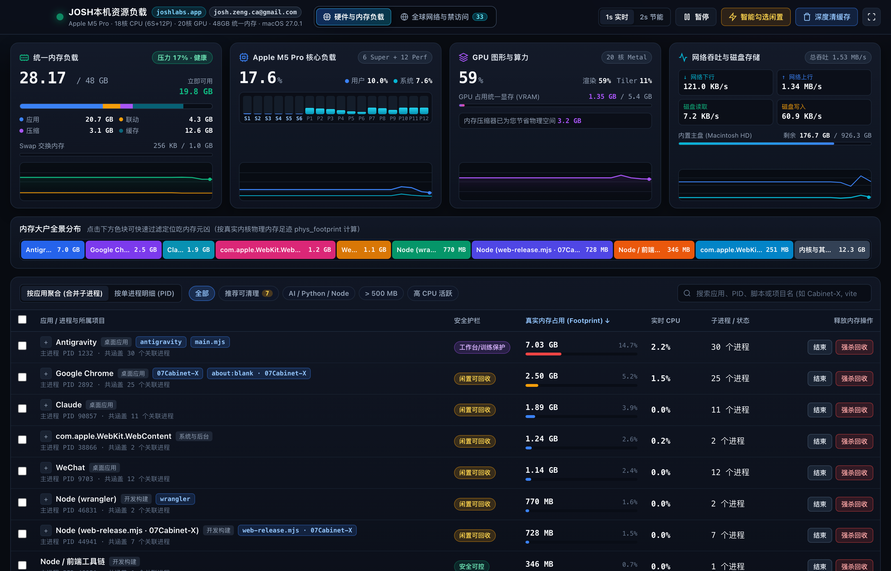
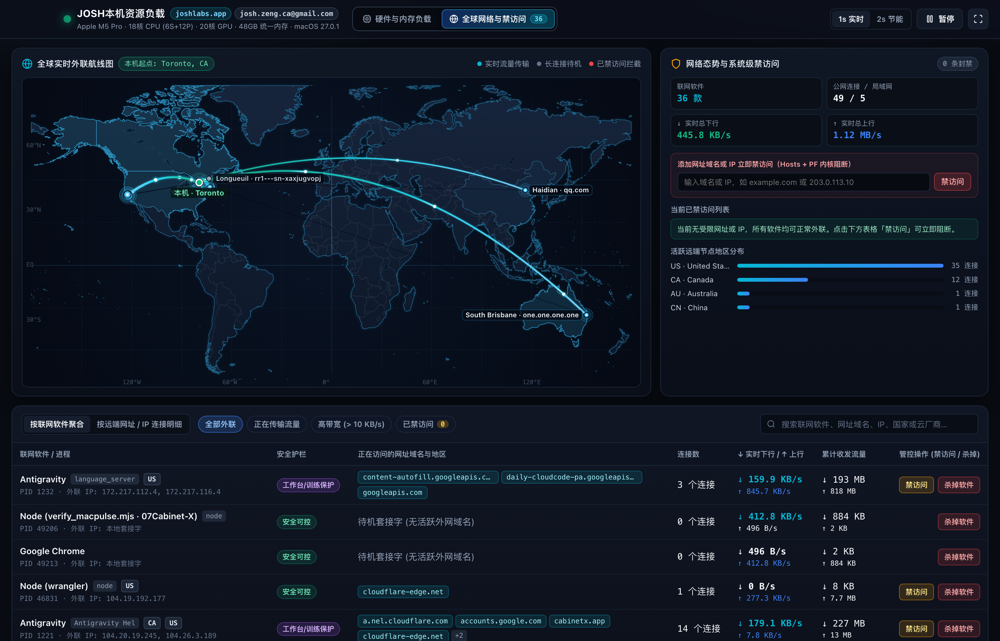

1. 下载 DMG 镜像
点击上方「macOS 下载 (.dmg)」，获取经 Apple 官方公证钉票的安装镜像（适用于 M1 / M2 / M3 / M4 / M5 全系 Apple Silicon Mac，macOS 14.0 及以上）。
JOSH System Load · macOS 14+ (Apple Silicon M1–M5) · v1.0.0
一眼看透整机负载与全球外联，一键杀内存、禁访问。
专为 Apple Silicon Mac 打造的原生实时驾驶舱：全景透视多核 CPU、Metal GPU 统一显存、内核真实物理内存足迹（phys_footprint）与 Swap 压力；切换到「全球网络与禁访问」，在世界地图上实时追踪哪款软件正在连向哪座城市、哪个网址域名、占多少带宽，并可随时杀掉软件或从系统级禁止访问。
Real-time native macOS cockpit for Apple Silicon: inspect per-core CPU, Metal GPU VRAM, and true kernel memory footprint, reclaim memory safely in one click, and switch to the live World Map to see which apps are connecting to which domains/cities, their bandwidth, and kill or firewall-block access instantly.
硬件与内存清理 + 全球网络地图与防火墙阻断


Apple Developer ID 签名与公证（Notarized），零外部环境依赖
点击上方「macOS 下载 (.dmg)」，获取经 Apple 官方公证钉票的安装镜像（适用于 M1 / M2 / M3 / M4 / M5 全系 Apple Silicon Mac，macOS 14.0 及以上）。
双击打开下载的 JOSH-System-Load-1.0.0.dmg，将「JOSH本机资源负载」图标拖入右侧 Applications 文件夹即可完成安装。
纯原生 Swift + IOKit 内核采集引擎封装，无需安装 Node、Python 或任何后台常驻插件；关闭窗口即彻底退出，零后台耗电。
为什么做 JOSH本机资源负载
01
直读 Darwin 内核 ri_phys_footprint 物理内存足迹，与 macOS 活动监视器完全同源，自动将浏览器渲染子进程、AI 模型训练脚本与残留构建进程按项目聚合归类。
02
内置全球实时外联航线图，展示本机每一款联网软件正在访问的网址域名、云服务商、国家城市坐标与实时上下行速率。
03
三级安全护栏自动保护 macOS 核心服务与活跃训练工作台；对异常吃内存或偷偷联网的软件，支持优雅结束、强制杀掉回收内存，或通过 Hosts + PF 内核防火墙一键阻断访问并随时恢复。
macOS 14 Sonoma 或更高版本 · Apple Silicon 原生 64 位
区分超级核（Super）与性能核（Perf）实时柱状矩阵，直读 Apple GPU 渲染器利用率与统一显存（VRAM）占用。
自动扫描低 CPU 却常驻高内存的闲置应用与僵尸构建进程，一键勾选批量释放，实时反馈回收内存量。
从本机所在城市出发绘制实时动态飞线与流量粒子，点击任意海外城市节点即可下钻查看对应软件与连接。
支持「按联网软件聚合」与「按远端网址 / IP 明细」双维度切换，实时监控 TCP / QUIC / UDP 上下行速率与累计流量。
输入任意网址域名或点击连接行即可写入受管 Hosts 与 macOS pfctl 防火墙锚点立即切断连接，支持一键恢复访问。
所有硬件与进程数据 100% 留在本机处理，免费、无广告、无账号体系。
Independent app studio by Joshua Zeng, Canada · joshlabs.app